Bodybuilding Supplements Guide
Learn about the most effective bodybuilding supplements, their benefits, possible side effects, who should use them, and how to use them safely.
1. Whey Protein
- Benefits: Boosts muscle growth, fast post-workout recovery, convenient protein source.
- Disadvantages: May cause bloating or digestive discomfort for lactose-intolerant people.
- Mitigation: Use isolate or hydrolysate versions for easier digestion.
- Dosage: 20–40g per serving, usually post-workout or in the morning.
- Who should use: All lifters, especially those who struggle to eat enough protein from food.
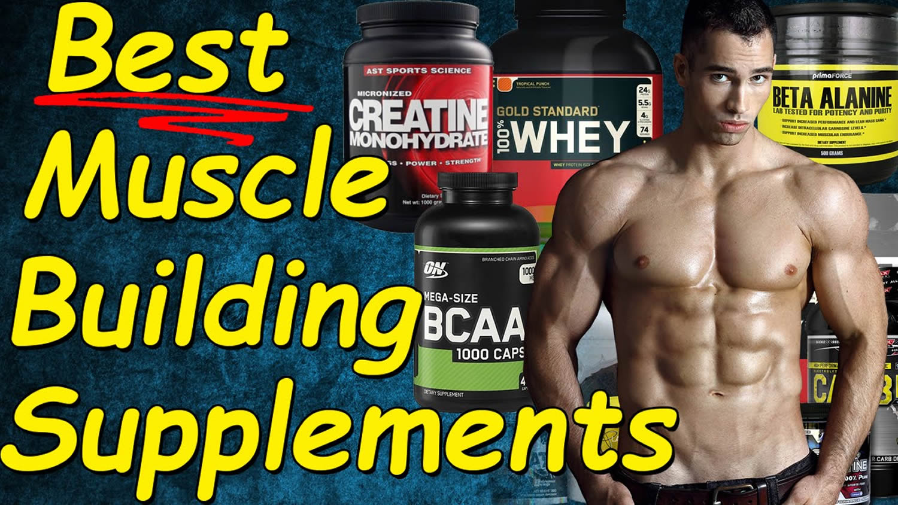
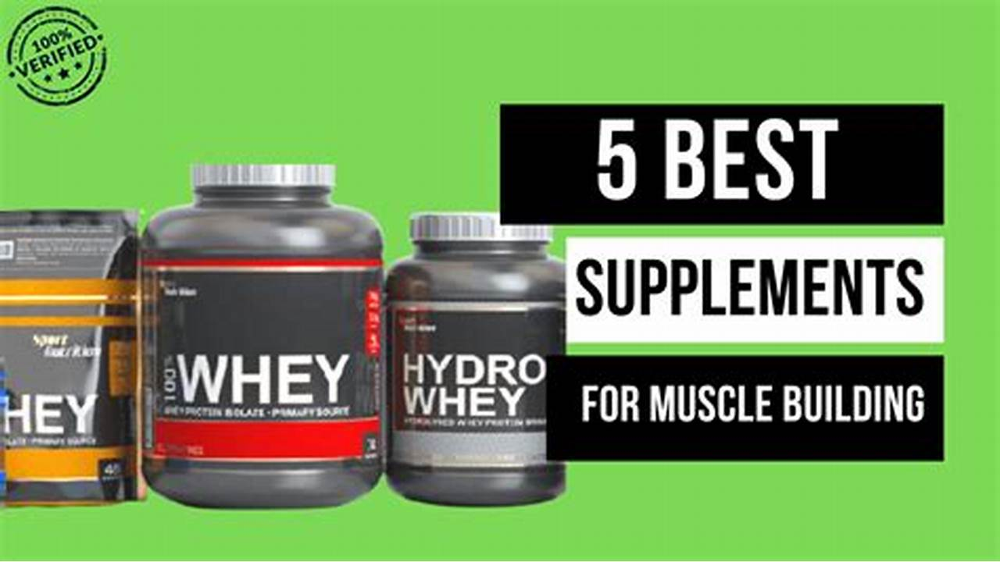
2. Creatine Monohydrate
- Benefits: Increases strength, boosts endurance, supports muscle growth.
- Disadvantages: Water retention, slight weight gain, mild stomach discomfort in some users.
- Mitigation: Take with food and stay well hydrated.
- Dosage: 5g daily (no need to load, but optional 20g/day for 5–7 days if loading).
- Who should use: Intermediate to advanced lifters; safe for most healthy adults.
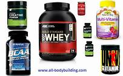
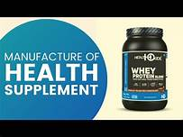
3. BCAAs (Branched-Chain Amino Acids)
- Benefits: Reduces muscle soreness, preserves muscle during cutting phases.
- Disadvantages: Less effective if your diet already has enough protein; expensive.
- Mitigation: Only use if training fasted or during intense cutting.
- Dosage: 5–10g during or before workouts.
- Who should use: Cutting bodybuilders, fasted trainers, vegetarians with low protein intake.
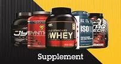
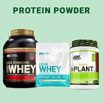
4. Pre-Workout Supplements
- Benefits: Increased focus, energy, and performance during training.
- Disadvantages: Jitters, crash, high caffeine may affect sleep or heart rate.
- Mitigation: Choose low-stimulant versions, avoid taking it late in the day.
- Dosage: 1 scoop (check label, ~150–300mg caffeine).
- Who should use: Advanced lifters or those training in the early morning with low energy.
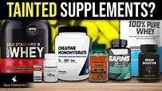
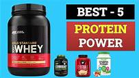
5. Multivitamins
- Benefits: Fills nutritional gaps, supports immune function and metabolism.
- Disadvantages: Overuse can cause vitamin toxicity if megadoses are taken.
- Mitigation: Follow recommended daily intake; don’t mix with other high-dose vitamin products.
- Dosage: 1 tablet per day with a meal.
- Who should use: All lifters, especially those on restrictive or poor diets.
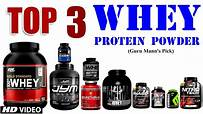
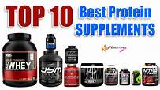
6. Omega-3 Fish Oil
- Benefits: Reduces inflammation, supports heart and joint health.
- Disadvantages: Fishy aftertaste, may cause digestive upset in some users.
- Mitigation: Use enteric-coated capsules, store in the fridge.
- Dosage: 1000–3000mg daily (EPA + DHA combined).
- Who should use: Lifters with joint pain or inflammation; helpful for general health.
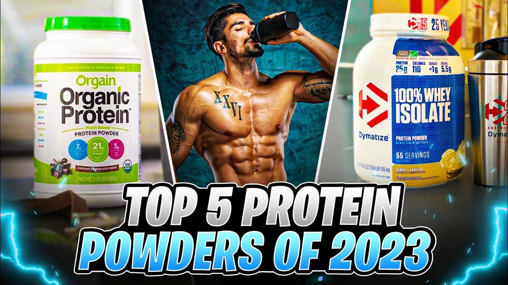
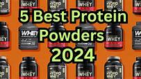
7. Casein Protein
- Benefits: Slow-digesting protein ideal for overnight recovery.
- Disadvantages: Same as whey—may cause issues for lactose-sensitive people.
- Mitigation: Use lactose-free or hydrolyzed casein if needed.
- Dosage: 20–40g before bed or between meals.
- Who should use: Intermediate to advanced lifters looking to reduce overnight catabolism.
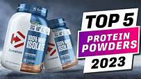
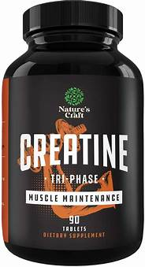
⚠️ General Warnings
- Always consult a doctor if you have health conditions before starting supplements.
- Supplements should support your diet — not replace real food.
- More is not better — stick to the recommended dosages.
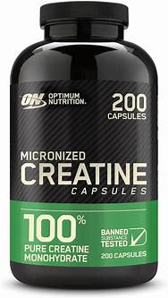
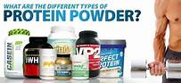